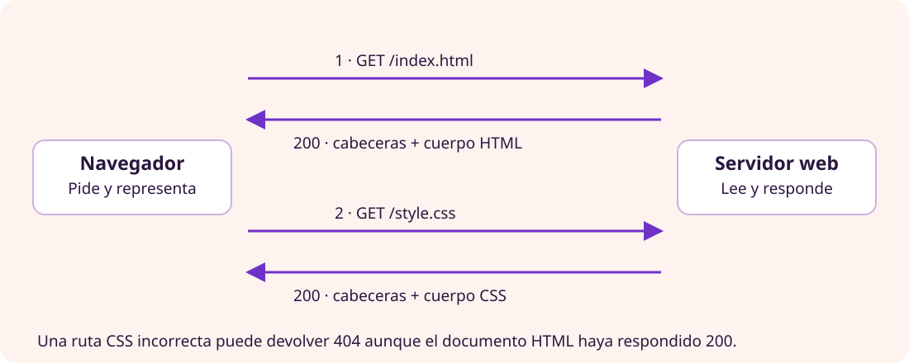

AEA2 · Comunicación web
HTTP y comunicación web
Arranca el portal, sigue una petición y utiliza sus respuestas para diagnosticar problemas.
1. Interpretar una URL
http://127.0.0.1:8000/torneig.html esquema host puerto ruta
HTTP define el intercambio de peticiones y respuestas. 127.0.0.1 es una dirección de loopback: apunta al propio equipo. localhost es un nombre que habitualmente resuelve a loopback. Una IP literal no requiere consultar DNS para localizar ese host. El puerto distingue el servicio dentro del equipo.
Los puertos predeterminados son 80 para HTTP y 443 para HTTPS. En el laboratorio usamos 8000. HTTPS protege la comunicación mediante TLS; lo configuraremos en RA2. HTTP/1.1 y HTTP/2 suelen usar TCP; HTTP/3 usa QUIC sobre UDP. No configuraremos esas variantes en esta práctica.
2. Petición
GET /torneig.html HTTP/1.1 Host: 127.0.0.1:8000 Accept: text/html
Incluye método, recurso y cabeceras; puede incluir cuerpo. GET solicita una representación. HEAD solicita cabeceras sin cuerpo de respuesta. POST envía datos para procesarlos; no cifra por sí mismo la comunicación.
3. Respuesta
HTTP/1.0 200 OK Content-Type: text/html <!doctype html>...
La versión depende del servidor: el de Python puede responder HTTP/1.0. Las cabeceras describen la respuesta y el cuerpo contiene el recurso. Content-Type ayuda a interpretarlo.
| Estado | Significado |
|---|---|
| 200 | Petición correcta. |
| 301 / 302 / 303 | Redirección, con semánticas diferentes. |
| 304 | Se puede reutilizar la copia en caché. |
| 403 | Acceso rechazado. |
| 404 | Recurso no encontrado. |
| 500 | Error interno. |
| 503 | Servicio temporalmente no disponible. |
4. Una página, varias peticiones
Tras obtener HTML, el navegador solicita los recursos referenciados, como CSS o imágenes. La portada puede responder 200 y verse sin estilos si el CSS devuelve 404. Hay que observar el recurso concreto.
5. Archivo local y HTTP
Con file:// se lee el documento desde el disco sin un servidor HTTP. No hay estado HTTP del documento. Al servir el mismo HTML con Python sí hay petición y respuesta. El contenido sigue siendo estático.
6. Observar y diagnosticar
Abre Network antes de recargar. Selecciona el documento y el CSS y revisa URL, método, estado, Headers y Response. Los registros del servidor complementan esta observación.
curl -i http://127.0.0.1:8000/ curl -I http://127.0.0.1:8000/style.css
Un 404 demuestra que un servidor ha respondido. Connection refused indica que no se ha establecido la conexión: comprueba proceso, host y puerto antes de buscar errores de HTML.
Comprueba que lo entiendes
- ¿Por qué puede funcionar el HTML y fallar el CSS?
- ¿Qué diferencia hay entre método y estado?
- Si detienes el servidor, ¿obtienes 404? Justifícalo con la prueba.
- ¿Puede un compañero acceder a tu 127.0.0.1 desde su equipo?
Configuración · Sirve tu portal localmente
Para observar HTTP usaremos primero el servidor de demostración de Python. No sustituye la futura instalación de Apache y no es un servidor de producción.
Aplicación al proyecto
Arranca desde la carpeta correcta
- Entra en la carpeta portal/ de tu repositorio. Comprueba con
pwdylsque contiene index.html. - Ejecuta el comando y deja abierto el terminal:
python3 -m http.server 8000 --bind 127.0.0.1Visita http://127.0.0.1:8000/. El argumento bind limita la escucha a tu equipo. Otro alumno no puede llegar a ese loopback desde su ordenador.
Si el puerto está ocupado, usa 8005 y cambia todas las URL. No detengas procesos sin identificarlos. Detén tu servidor con Ctrl+C cuando termines.

Prueba e interpreta lo que ocurre
Aplicación al proyecto
Observa, provoca y diagnostica
- Abre las herramientas del navegador, entra en Red/Network y desactiva la caché mientras estén abiertas.
- Recarga la portada. Selecciona el documento: anota URL, método, estado, Content-Type y contenido.
- Selecciona style.css y compara esa petición con la del HTML.
- En otro terminal, ejecuta:
curl -i http://127.0.0.1:8000/
curl -I http://127.0.0.1:8000/style.css
curl -i http://127.0.0.1:8000/no-existeix.html-i incluye cabeceras; -I envía HEAD y no solicita el cuerpo de respuesta. Espera 200, 200 y 404 respectivamente. La versión HTTP y algunas cabeceras pueden variar.
- Detén el servidor y repite curl: explica por qué el error de conexión no es un 404.
- Arráncalo otra vez y verifica la recuperación.
- Documenta resultados esperados, observados y conclusión.
Objetivo conseguido: puedes servir la web y diferenciar respuesta correcta, recurso inexistente y servicio detenido con pruebas propias.
Diagnóstico y ampliaciones
| Síntoma | Qué comprobar |
|---|---|
| Se muestra un listado de carpetas. | Directorio desde el que arrancaste y existencia de index.html. |
| Address already in use. | Puerto ocupado; elige otro para tu prueba. |
| Sin estilos. | Petición CSS, ruta y estado de respuesta. |
| Connection refused. | Servidor activo, IP y puerto correctos. |
| 304 en lugar de 200. | Caché; recarga con ella desactivada para repetir el experimento. |
Ampliación opcional
Investiga con hipótesis
- CSS roto: cambia temporalmente su ruta en una página. Predice el estado, observa Network, repara y verifica. No dejes el error en la entrega final.
- Dos servicios: sirve dos carpetas distintas en 8000 y 8005, ligados a loopback. Explica qué parte de la URL decide cuál responde.
- Caché: compara con y sin caché y explica lo observado. No todos los navegadores producirán el mismo estado.
Entrega adicional: hipótesis, prueba, resultado y explicación. Elige una investigación, no acumules capturas sin interpretar.
Referencia: documentación oficial de http.server.